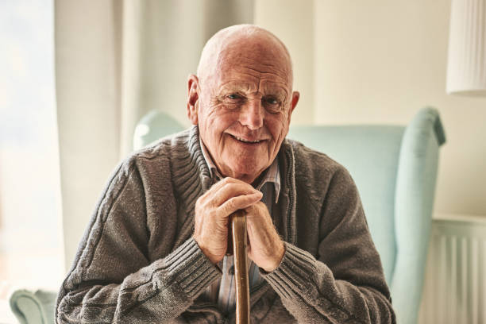

Grayson William
1940-2017
In loving memory of Grayson
Friends, family, and loved ones, please join us as we say goodbye to our dearest Grayson. We’ll pay tribute to his life and many accomplishments at the Veterans Center at 11:30 a.m. on March 3. If you’d like to make a donation in his honor, we suggest contributing to Wounded Warriors, an organization near and dear to Grayson.